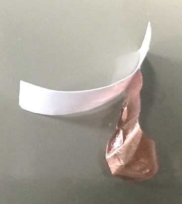
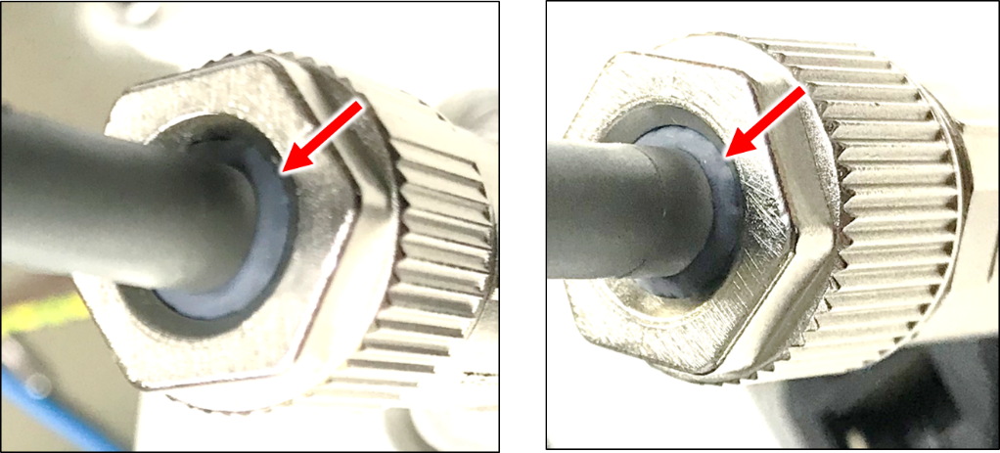
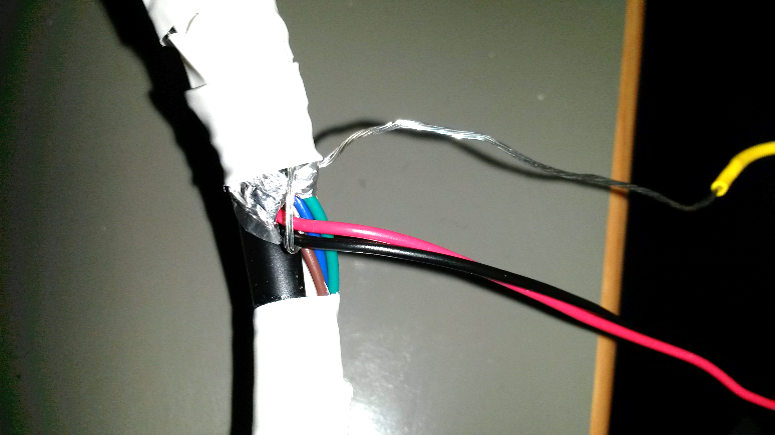
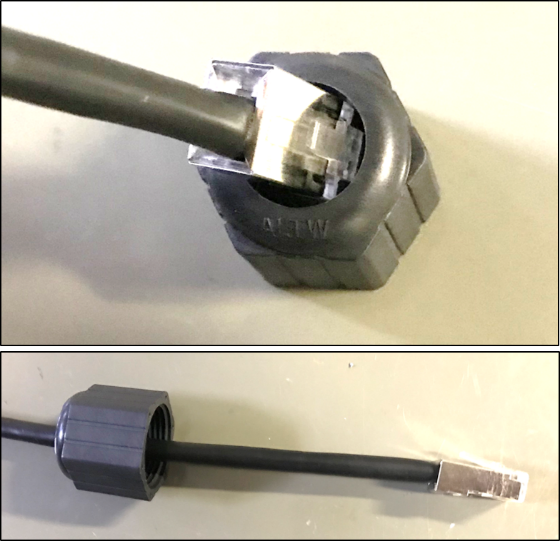
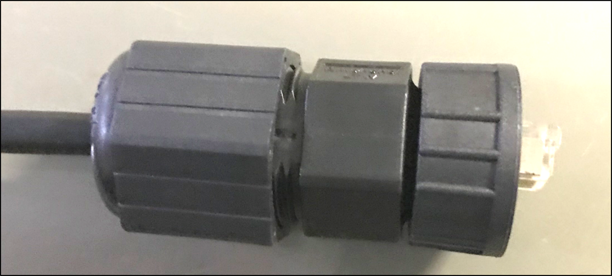

IZA800G/GW
IZA800G
ALPR All-in-one AI Camera System
Installation and Calibration Guide
Doc. No. IZA800G-GW-MAN-002


- 1. About this Document
- 2. Quick Installation Overview
- 3. Camera System Overview
- 4. Required/Optional Accessories (Not Included)
- 5. Planning Your Installation
- 6. Hardware Installation
- 7. Reserving IP Addresses in your Network
- 8. Recognizing Devices with IZ Discovery
- 9. Configuring a Camera
- 10. Calibrating the Cameras
- 11. Determining the IP Address of the RoadView Computer with IZ Discovery
- 12. Using RoadView
- 13. Troubleshooting and Maintenance
- 14. Notices, Safety Precautions and Certifications
- 15. Appendix A - Document Change History
1. About this Document
1.1. Who Should Read this Document
This document is for:
-
Technical personnel who need to install IZA Camera Systems.
|
This document does not take the place of training by INEX Technologies' certified specialists. Contact INEX Technologies to schedule training. |
1.2. Recommended Reading/Related Documents
Contact INEX Technologies for document ordering information.
| Doc. No. | Title |
|---|---|
IZA800G Technical Data Sheet |
|
IZA800GW Technical Data Sheet |
|
Product-to-Mount Mapping |
|
Mounting Hardware documentation |
|
IZ Discovery Utility software components |
|
RoadView ALPR User Guide |
|
IZS Illuminator Series User Guide |
|
IZPWR Surface Mount Power Supplies Technical Data Sheet |
|
IZPWR DIN Rail Mount Power Supplies Technical Data Sheet |
|
IZIO Digital I/O Controller Installation and User Guide |
|
NDAA Section 889 Certification of Compliance |
2. Quick Installation Overview
-
Unpack the Camera System - see Section 3.1, “Package Contents” .
-
Gather any additional items needed - see Section 4, “Required/Optional Accessories (Not Included)” .
-
Plan your physical installation - see Section 5, “Planning Your Installation” .
-
Install the hardware (including cable construction) - see Section 6, “Hardware Installation” .
-
Reserve IP addresses for the components in your ALPR system - RoadView computer(s) and camera(s) - see Section 7, “Reserving IP Addresses in your Network”
-
Use IZ Discovery to find the initial IP Addresses of the cameras connected to your network - see Section 8, “Recognizing Devices with IZ Discovery” .
-
Log into each camera, and change its IP address according to the requirements of your network. Use fixed addresses. Record these new addresses for use in RoadView configuration - see Section 9.1, “Logging In to the Camera” and Section 9.2, “Changing a Camera’s IP Address” .
-
Calibrate the cameras - see Section 10, “Calibrating the Cameras” .
-
Use IZ Discovery to find the IP address of the RoadView computer. Change the computer’s IP address according to the requirements of your network. See Section 11, “Determining the IP Address of the RoadView Computer with IZ Discovery” and the RoadView ALPR User Guide.
-
Log in to RoadView, and configure RoadView, including adding the connected cameras - see Section 12, “Using RoadView” and the RoadView ALPR User Guide.
-
On the Journal tab, verify that Events are being generated for each vehicle passing each camera, and that the recognition has sufficient accuracy and confidence. See Section 12, “Using RoadView” and the RoadView ALPR User Guide.
2.1. Support
If you have any questions, please contact our support team via our INEX Technologies Website.
3. Camera System Overview
3.1. Package Contents
Carefully unpack the contents of the ALPR Camera System package.


The package includes:
-
IZA800G, ALPR All-in-one AI Camera System
-
LAN cable connector (field-mountable)
-
Power/Signals cable connector (field-mountable)
-
Mounting adapter plate with screws: 3 - 18-8 stainless steel thread-locking socket head screws, 1/4"-20 thread size, 5/8" long; Allen heads; used to attach the mounting adapter plate to the housing
| If any parts are missing or damaged, please contact INEX Technologies. |
3.2. Camera System Details and Dimensions
The IZA800G ALPR All-in-one AI Camera System is suitable for tolling and ITS applications, with different models available for different distances and illumination requirements. \{Zvulun: partial} It has a rugged, all-weather, IP67-compliant, waterproof housing and a protective sunshade. The system consists of a black and white License Plate Recognition (LPR) camera, a color Overview (OV) camera, and an integrated, LED-based illumination system. A computer running license plate recognition software is also built in.


\{Zvulun: front and side view of dimensions should be converted to partials}
3.3. Multi-flash Technology
\{Zvulun: possible partial, along with the picture} The Camera System’s illuminators project different light intensities in a sequence (also called multi-flash technology). This produces a series of video frames with varying degrees of illumination, which helps to determine the best possible recognition.

3.4. Built-in White LEDs (IZA800GW)
\{Zvulun: text and picture could be a partial for other camera models with white LEDs}
Some of the built-in LEDs of the IZA800GW are white. They are used for overview image illumination.

3.5. Specifications
| Item | IZA800G | IZA800GW | |
|---|---|---|---|
Hardware Revision |
F1 |
F1 |
|
Supported Analytics |
LPR Analytics |
Plate Recognition |
|
Plate State of Issue |
|||
Plate Type |
|||
Vehicle Analytics |
Vehicle Detection |
||
Vehicle Classification |
|||
Vehicle Color |
|||
Vehicle Make |
|||
Lanes Covered |
One |
||
Max Vehicle Speed |
Up to 120 mph (193 km/h) |
||
LPR Capture Distance* (for U.S.A. plates) |
|
||
|
|||
|
|||
LPR Illumination |
Number of LEDs |
|
|
Wavelength |
|
|
|
|
|
||
|
|
||
Beam Angle |
|
|
|
|
|
||
|
|
||
LPR Camera |
Shutter Type |
Global |
|
Sensor |
Sony IMX265 |
||
Resolution |
2mp - 1920 (H) x 1080 (V) |
||
Lens |
|
|
|
|
|
||
|
|
||
Video Compression |
MJPEG, H.264, H.265 |
||
Video Streaming |
RTSP Protocol |
||
OV Illumination |
Number of LEDs |
|
|
Wavelength |
|
|
|
|
|||
|
|||
Beam Angle |
|
|
|
|
|
||
|
|
||
OV Camera |
Shutter Type |
Global |
|
Sensor |
Sony IMX265 |
||
Resolution |
2mp - 1920 (H) x 1080 (V) |
||
Lens |
|
|
|
|
|
||
|
|
||
Video Compression |
MJPEG, H.264, H.265 |
||
Video Streaming |
RTSP Protocol |
||
Supported Protocols (for additional protocols, see the RoadView ALPR User Guide) |
INEX HTTP API |
LPR Events are reported to IZCentral, or a 3rd party system via protocols such as the INEX HTTP API protocol. Each LPR Event includes metadata and associated images. |
|
INEX Discovery |
The INEX Discovery Protocol is used by the IZ Discovery utility to find all devices connected to the LAN. IZ Discovery also enables display and editing of each device’s network settings. |
||
AI Processor |
GPU |
NVIDIA Maxwell architecture with 128 CUDA® cores |
|
CPU |
Quad-core ARM Cortex-A57 MPCore processor |
||
RAM |
4 GB 64-bit LPDDR4, 1600MHz 25.6 GB/s |
||
System Storage |
MicroSD, 64 Gb |
||
Data Storage |
128 Gb |
||
RTC Battery |
Maintains real-time clock date and time for 4-6 hours |
||
Rechargeable; Full charge-up time: 12 hours |
|||
OS |
Linux Ubuntu 18.04 |
||
Environmental |
Ingress Protection |
IP67 |
|
Operating Temperature |
-22°F to 140°F (-30°C to 60°C) |
||
Storage Temperature |
-22°F to 158°F (-30°C to 70°C) |
||
Humidity |
0% - 90% RH, non-condensing |
||
Certifications |
EMC |
FCC Class B/CE |
|
Interoperability |
ONVIF compliant, Profile S |
||
RoHS |
RoHS |
||
Impact Protection |
IK10 (Vandal-proof) |
||
Eye Safety |
IEC62471 Group 1 |
||
NDAA |
NDAA Section 889 compliant |
||
Physical |
Dimensions |
(W x H x D) 6.7” x 4.7” x 17.7” (171 mm x 119 mm x 451 mm) |
|
Weight |
9.0 lbs (4.1 kg) |
||
Color |
White |
||
Interface |
Ethernet |
10/100 BaseT |
|
Connectors |
LAN - Waterproof outdoor RJ-45 connector |
||
Power/Signals - Waterproof outdoor M12 connector |
|||
Digital Outputs |
LPR Strobe (+/-): 5 V isolated |
||
OV Strobe (+/-): 5 V isolated |
|||
Power |
Input Voltage |
24 VDC +/- 10%, Class 2 Low-Voltage |
|
Power Consumption |
25 W |
||
Accessories Included |
Sunshade |
||
Waterproof outdoor RJ-45 cable connector |
|||
Waterproof outdoor M12 cable connector |
|||
Accessories Available |
Power Supply |
||
IZIO Digital I/O Controller |
|||
Different lengths of prefabricated power/signals cables |
|||
Different mount options available |
|||
External Illuminator (IZS Series) |
|||
* LPR Capture Distance is measured from camera to plate
4. Required/Optional Accessories (Not Included)
4.1. Required Accessories
\{Zvulun: some of these are possible partials}
-
An Allen wrench used to attach the mounting adapter plate to the housing (if applicable); size 3/16" (4.76 mm)
-
8-wire cable for power/signals; recommended to use E119932-1/LL84201, 24 gauge (size of each wire); see Section 6.3, “Constructing the Power/Signals Cable” .
-
2 mm flat screwdriver for tightening the screw terminals of the power/signals connector (see Section 6.3, “Constructing the Power/Signals Cable”).
-
16 mm torque wrench for tightening the nuts of the power/signals connector, and for attaching the connector to the Camera System.
-
Network (LAN) cabling (typically CAT 5e/6 cable) with metal-body RJ45 connectors. The total length of the cable should not exceed 328 feet (100 meters). See Section 6.4, “Constructing the LAN Cable” for important LAN cable information.
-
Tools for building LAN cables (wire stripper, crimp tool, etc.) and RJ45 connectors with metal bodies.
| All network cable extensions and repeaters must be shielded. |
-
You will need to provide a laptop computer to use for configuration. If you will be using the laptop outdoors, the screen must be able to be seen in strong sunlight. Required software:
-
Windows 10 or above - with .NET 4.5 enabled in "Windows Features"
-
Internet Explorer browser version 11 or higher
-
-
The following accessories can be supplied by INEX/TECH:
| Item | Notes |
|---|---|
24VDC power supply (voltage-adjustable) |
INEX/TECH model power supply. (If you use an external illuminator, it is recommended to use an illuminator power supply separate from the Camera System’s supply.) |
Mounting Hardware (pan-tilt-roll bracket) |
Typically on gantry or wall/pole; see the Mounting Hardware Documentation for details. |
4.2. Optional Accessories
\{Zvulun the last two bullets are a partial - p-optional_acces_illum.adoc - but you will need to be sure that the bullets are at the second level, plus you will need another of the same text but with bullets at the first level for other places in this document.}
-
External Illuminator - Can be used to enhance overview vehicle image quality, for front and/or rear capture. It is recommended to use an illuminator power supply separate from the Camera System’s supply.
-
Mount illuminators at an appropriate distance away from their associated Camera System(s), according to the objectives of your project. Contact INEX for guidance/training about this subject.
-
Position the illuminator so you can aim it at the place where vehicles pass for recognition - while minimizing the glare into drivers' eyes. In most cases, however, white illuminators are mounted to be aimed at the rear of vehicles. Illuminator aiming is most effective at night.
-
5. Planning Your Installation
\{Zvulun: entire section is a possible partial}
5.1. Horizontal Field of View (Capture Line)
Your Camera System’s Field of View (FOV) is the area that the camera can "see". You can think of this area as an imaginary rectangle rising from the lane upwards. The width of this area is called the horizontal FOV or "capture line".
One of the specifications of your Camera System (see Table 2, “Technical Specifications”) is the sensor resolution width, in pixels.
Another important specification is the number of pixels needed to recognize a license plate. For example, this is typically 150 for a U.S. plate image captured at the middle of the capture line.
The factor determining the number of plate widths that can fit in the camera sensor’s Field of View is the resolution width divided by the plate pixels. For a Camera System with a resolution width of 1920 pixels, this would be 1920/150 = 12.8
Multiplying this factor by the width of a plate in your location will give you the length of the capture line. For a U.S. plate 1 foot wide, the width of the capture line will be approximately 12 feet (3.7 meters).
Select your Camera System’s position so that license plates are always within the capture line and parallel to it, with the Camera System facing as straight at the plates as possible - as shown in the following diagrams:

5.2. Angles and Distances
| Installations that position the camera at significant angles in relation to the plates will reduce the line-of-sight distances specified. |

|
The maximum horizontal angle allowed is 30° (to the farthest point at the end of the capture line). If you must capture plates on a curve, place the Camera System on the side of the road that minimizes the horizontal angle. At larger angles, the reflectivity of the plates is reduced, resulting in images with less contrast. For plates whose characters are very shiny (for example, silvery), the weighted angle must be less than 20 degrees. The weighted angle is the angle between a line from the camera to the plate, and a line running straight ahead from the car. |
|
The distance from the Camera System to the capture line must be within the viewing range of the LPR camera. Adjust the vertical angle so that the Camera System can read plates at all of their expected heights from the road. The maximum vertical angle allowed is 30°. Larger angles and/or greater mounting heights may be required in order to recognize plates on vehicles close to each other (such as in slow/congested traffic). At larger angles, the reflectivity of the plates is reduced, resulting in images with less contrast. For plates whose characters are very shiny (for example, silvery), the weighted angle must be less than 20 degrees. The weighted angle is the angle between a line from the camera to the plate, and a line running straight ahead from the car. |
5.3. Position of the Sun in Relation to the Camera System
The Camera System should not be positioned so that the rays of the sun behind the Camera System shine along the camera-to-plate axis. Reflective plates will cause severe glare to be reflected back to the camera, obscuring the image of the plate’s characters.
Avoid/mitigate by:
-
Not installing the Camera System in an east/west direction
-
Installing the Camera System near a building that shields it from the sun’s rays
-
Installing the Camera System on a short pole
-
Using a double-Camera System installation (2 different angles or front/rear)

5.4. Optimizing Nighttime Vehicle Overview Images (using External Illuminators)
\{Zvulun: possible partials in this section}

5.4.1. Matching Your Camera System to an INEX Illuminator
\{Zvulun: the following important note could be a partial - but so small so may not be worth it?}
| The wavelength of an external illuminator must be compatible with the wavelength of the internal illuminators of the INEX Camera System. See the appropriate Illuminator Series User Guide(s) for compatibility information. |
The INEX IZA800G Camera Systems are typically used with the IZS Series Strobe Illuminators.
By using the following guidelines, you can match the illuminator you need to the INEX Camera System being used.
-
Infrared-type illuminators are typically synchronized with the LPR sensor, and white illuminators are typically synchronized with the OV sensor. You can choose which sensor to trigger from (LPR or OV) by using appropriate wiring (see Section 6.1, “Typical Wiring Diagram”).
-
The number of illuminator LEDs and beam angle must match the distance type (long or short) of the Camera System being used, as follows:
-
Fewer LEDs and wider beam angles are used for short distances
-
More LEDs and narrower beam angles are used for longer distances
-
The results of applying these guidelines can be found in the appropriate Illuminator Series User Guide(s)
5.4.2. Illuminator Triggering and Pulse Width
You can choose which camera to trigger from (LPR or OV) by using appropriate wiring (see Section 6.1, “Typical Wiring Diagram”). The pulse width and other parameters that affect illuminator operation are pre-configured according to your project’s requirements.
5.4.3. Illuminator Mounting and Aiming
\{Zvulun: partial called p-optional_acces_illum.adoc}
See the illuminator guides for further details about installation and mounting considerations.
-
Mount illuminators at an appropriate distance away from their associated Camera System(s), according to the objectives of your project. Contact INEX for guidance/training about this subject.
-
Position the illuminator so you can aim it at the place where vehicles pass for recognition - while minimizing the glare into drivers' eyes. In most cases, however, white illuminators are mounted to be aimed at the rear of vehicles. Illuminator aiming is most effective at night.
5.5. Additional Installation Considerations
\{Zvulun: many parts of this table are possible partials}
| Item | Considerations | ||
|---|---|---|---|
Surge Protection |
|
||
Correct, Stable and Sufficient Power |
|
||
Cable Extensions
|
|
||
Front/Rear Capture - or Both |
|
||
Objects with character-like appearances (interpreted as characters on a plate, resulting in false reads) |
Avoid having these items in the Field of View:
|
||
Obstructions (blocking FOV) |
|
||
Mounting |
|
6. Hardware Installation
6.1. Typical Wiring Diagram
Here is a typical wiring diagrams for capturing license plate images. Note that the type and configuration of the power supply may be different than the one you are using at your site.

|
All network cable extensions and repeaters must be shielded. After mounting, remove the protective film from the front window of the Camera System. |
6.2. Mounting the Camera System
Secure the Camera System to the appropriate mounting hardware (see the Mounting Hardware Documentation).
6.3. Constructing the Power/Signals Cable
\{Zvulun: possible partial section}
| At the end of this procedure, you will need to check that there is conductivity from the shield wire (at the power supply end of the cable) to the body of the connector that will be connected to the camera. |
Use the cable type recommended in the Required Accessories section (see Section 4.1, “Required Accessories”).
-
Lay out the parts from the power connector package.
 Figure 16. Power/Signals Cable: Laying Out Connector Parts
Figure 16. Power/Signals Cable: Laying Out Connector Parts -
Thread the cable through the sealing nut and rubber seal.
 Figure 17. Power/Signals Cable: Threading Cable Through Sealing Nut and Rubber Seal
Figure 17. Power/Signals Cable: Threading Cable Through Sealing Nut and Rubber Seal -
Prepare the cable shielding:
-
Thread the cable all the way through the clamp cage body. Strip off the outer insulation of the cable, leaving the individual insulated wires exposed to a length of 18mm. Be careful not to cut into the inner foil and plastic sheaths (casings) surrounding the individual insulated wires.
-
Slit the foil sheath, and bend it back onto the outer insulation.
-
Carefully cut away the plastic sheath enclosing the individual insulated wires.
-
Wrap the shield wire (the one without insulation) 1-2 times around the foil sheath that you bent back.
 Figure 18. Power/Signals Cable: Stripping Off the Outer Insulation
Figure 18. Power/Signals Cable: Stripping Off the Outer Insulation
-
-
Peel the backing off of the conductive foil to expose the adhesive.
Figure 19. Power/Signals Cable: Peeling Backing off Conductive Foil -
Wrap the conductive foil around the point at which the outer insulation was stripped, to cover and make contact with the shield wire and foil sheath.
 Figure 20. Power/Signals Cable: Wrapping Conductive Foil Around Shield Wire and Sheath
Figure 20. Power/Signals Cable: Wrapping Conductive Foil Around Shield Wire and Sheath -
Strip off 5 mm from each individual wire. Insert each wire into its appropriate screw terminal, and tighten with a 2 mm flat screwdriver.
The suggested wire colors and pinouts are shown in the following Figures. The notch between pins 1 and 2 on the face of the connector corresponds to the notch on the circular body of the screw terminals. Figure 21. Power/Signals Cable: Power/Signals Pinouts
Figure 21. Power/Signals Cable: Power/Signals PinoutsPin Wire Color* Signal 1
Black
24 VDC -
5
Red
24 VDC
3
White
OV Strobe -
8
Green
OV Strobe
4
Blue
LPR Strobe -
2
Brown
LPR Strobe
7
Yellow
Unused
6
Orange
Unused
---
Drain
Shield
* INEX power/signals cable
 Figure 22. Power/Signals Cable: Attaching the Wires to the Screw Terminals
Figure 22. Power/Signals Cable: Attaching the Wires to the Screw Terminals -
Insert the screw terminals body into the clamp cage housing. Note how the tabs on the screw terminals fit into the grooves in the clamp cage housing.
 Figure 23. Power/Signals Cable: Inserting Screw Terminals' Tabs into Clamp Cage Housing
Figure 23. Power/Signals Cable: Inserting Screw Terminals' Tabs into Clamp Cage Housing -
Verify that the conductive foil is now making contact with the spring sleeve protrusions inside the clamp cage housing. Use a 16 mm torque wrench to tighten the nut that fastens the clamp cage housing to the screw terminals body (torque 4-6 kgf.cm / 0.39-0.59 N.m.).
 Figure 24. Power/Signals Cable: Foil in Contact with Spring Inside Clamp Cage Housing
Figure 24. Power/Signals Cable: Foil in Contact with Spring Inside Clamp Cage Housing -
Slide the sealing nut along the cable, and insert it in between the clamp cage protrusions.
 Figure 25. Power Cable: Inserting the Sealing Nut into the Clamp Cage
Figure 25. Power Cable: Inserting the Sealing Nut into the Clamp Cage -
Using a 16 mm wrench, tighten the nut that seals the end of the clamp cage housing. (torque 4-6 kgf.cm / 0.39-0.59 N.m.). Verify that the sealing nut is in tight contact with the inner body of the nut (to provide insulation against moisture). The sealing nut may pucker a bit due to the pressure of the nut; this is normal.
Figure 26. Power Cable: Tightening the Nut to Seal the Clamp Cage -
The point in the cable at which you will be connecting the power wires (+, - and ground) to the power supply may be in the middle of the cable. (This part of the cable is typically inside a connection box to seal all connections from moisture.)
-
Strip off a portion of outer insulation of the cable at the end you will be connecting to the power supply. Remove enough insulation so the shield wire will be long enough to wrap several times around the foil sheath (see next steps) and come out of the cable to reach the power supply ground wire. Be careful not to cut into the inner foil and plastic sheaths (casings) surrounding the individual insulated wires.
-
Slit the foil sheath, and bend it back onto the outer insulation. Leave enough foil exposed so the shield wire can be wrapped several times around the foil.
-
Carefully cut away the plastic sheath enclosing the individual insulated wires.
-
Wrap the shield wire (the one without insulation) several times around the foil sheath that you bent back. There must be a tight contact between the shield wire and the foil.
 Figure 27. Power Cable: Wrapping the Shield Wire at Power Supply End
Figure 27. Power Cable: Wrapping the Shield Wire at Power Supply End -
IMPORTANT: Check that there is conductivity from the shield wire (at the power supply end of the cable) to the body of the connector that will be connected to the camera.
-
You can seal the shield wire wrapping on the cable with insulation tape or heat shrink tubing.
-
-
Connect the shield wire to the ground wire of the power supply. You may need to extend the shield wire by soldering an additional wire on to it.
-
Connect the (+) and (-) wires from the cable to the power supply.
Figure 28. Power Cable: Connecting the Cable Wires to the Power Supply -
Connect the remaining signal wires (see Section 6.5, “Connecting the Camera System, Illuminator, Power Supply and Network”).
6.4. Constructing the LAN Cable
\{Zvulun: possible partial section}
|
If you are building your own LAN cables, you must use RJ45 connectors with metal bodies. You must ensure that there is conductivity between the bodies of the connectors at each end of the cable. You can do this by extracting the cable’s shield wire before attaching the connector to the cable, and then soldering the shield wire to the body of the connector (see the following Figures). The outer diameter of the LAN cable must be in the range of 0.20" to 0.25" (5.0 to 6.5 mm). If you are using prefabricated CAT 5e/6 cables with metal-body RJ45 connectors, the shield wires have typically already been connected to each connector body. However, you must still check that there is conductivity between the bodies of the connectors at each end of the cable. |


-
Lay out the parts from the network (LAN) connector package.
 Figure 31. LAN Cable: Connector Parts
Figure 31. LAN Cable: Connector Parts -
Slip the sealing nut over the RJ45 connector onto the LAN cable, with the inner threads in the direction of the RJ45 connector.
Figure 32. LAN Cable: Slipping Sealing Nut Over RJ45 Connector -
Open the rubber sealing ring at its split, and put it on the cable.
 Figure 33. LAN Cable: Attaching Rubber Sealing Ring to Cable
Figure 33. LAN Cable: Attaching Rubber Sealing Ring to Cable -
Orient the support plastic with the wider side (with the thinner walls) towards the RJ45 connector. Put the support plastic on the cable (the split can expand slightly).
 Figure 34. LAN Cable: Attaching the Support Plastic to the Cable
Figure 34. LAN Cable: Attaching the Support Plastic to the Cable -
Gently push the RJ45 connector into the housing until it fits snugly in the cutout in the housing.
 Figure 35. LAN Cable: Inserting RJ45 into Housing Cutout
Figure 35. LAN Cable: Inserting RJ45 into Housing Cutout -
Insert the support plastic into the housing, followed by the rubber sealing ring. Seat the rubber sealing ring between the housing’s teeth as far in as it will go.
 Figure 36. LAN Cable: Inserting the Support Plastic and Rubber Ring into the Housing
Figure 36. LAN Cable: Inserting the Support Plastic and Rubber Ring into the Housing -
Tighten the sealing nut (torque 8-15 kgf.cm / 0.78-1.47 N.m.).
Figure 37. LAN Cable: Completed Assembly
6.5. Connecting the Camera System, Illuminator, Power Supply and Network
|
Stable power at the correct level must be supplied to each camera, even when under a heavy processing load. Turn off/disconnect the external (AC) power supply before connecting cables. If you are using an INEX power supply, see its User Guide for important information. IMPORTANT: All network cable extensions and repeaters must be shielded. The torques required to connect the cable connectors to the connectors on the Camera System are as follows: Power/signals cable: 3-4 kgf.cm / 0.29-0.39 N.m. |
| Pin | Wire Color* | Signal |
|---|---|---|
1 |
Black |
24 VDC - |
5 |
Red |
24 VDC |
3 |
White |
OV Strobe - |
8 |
Green |
OV Strobe |
4 |
Blue |
LPR Strobe - |
2 |
Brown |
LPR Strobe |
7 |
Yellow |
Unused |
6 |
Orange |
Unused |
--- |
Drain |
Shield |
* INEX power/signals cable
6.6. Connecting the AC Electricity
Connect a plug to the Live, Neutral and Ground terminals of the power supply (see Figure 15, “Typical Wiring Diagram”).
Plug the power supply into the AC electricity. If required, switch the power supply unit ON.
|
Power undervoltage, overvoltage and/or incorrect polarity will damage the unit and will void the warranty. |
7. Reserving IP Addresses in your Network
\{Zvulun: possible partial} The INEX cameras have been pre-configured with default IP addresses. You will probably need to change these addresses to conform to the requirements of your network. Be sure that you have IP addresses reserved for all components of your ALPR system (RoadView computer and cameras).
8. Recognizing Devices with IZ Discovery
\{Zvulun: entire section could be a partial}
8.1. Installing and Using IZ Discovery
The IZ Discovery utility discovers all active devices connected to the network, and displays a list of their network parameters. These devices can include cameras and computers.
|
If any device on your network is connected via wireless, IZ Discovery will not recognize the device. In addition, if the computer running IZ Discovery is connected via wireless, you will not see any devices displayed. |
-
Download the IZ Discovery software (see Section 1.2, “Recommended Reading/Related Documents”)
-
Run IZ Discovery
-
When IZ Discovery first runs, you may see a Windows security warning. If so, click Run.
-
If you see a message related to the Windows firewall, click Allow.
-
IZ Discovery will start and display a list of devices on the network, according to their serial numbers (see Figure 39, “IZ Discovery Utility”).
-
Scroll down to find the device you are interested in. You can double-click to view/edit a specific device’s IP address parameters (see Section 8.2, “Changing a Device’s IP Address and Network Settings”).
-
Click Clear List to refresh the discovery process.
 Figure 39. IZ Discovery Utility
Figure 39. IZ Discovery Utility
-
-
If IZ Discovery does not recognize a device:
-
Press the device’s reset button (if available)
-
Reset the device by shutting off power/removing the LAN cable, waiting 5 seconds, and reapplying power
-
Check the LAN cable connected between your laptop and the network, and the LAN cable connected between the device and the LAN switch. Replace the cable(s) and try to run IZ Discovery again.
-
8.2. Changing a Device’s IP Address and Network Settings
|
The device’s IP Address cannot be set to 10.10.2.xx or 10.10.3.xx It is highly recommended to use a fixed IP address (not DHCP). A fixed IP address enables you to access the computer using the same URL every time, even after unexpected power outages (see ). A dynamic IP address may change upon device reboot. Before opening the web interface, you will have to find the current IP address of the device using IZ Discovery. If you want to copy the IP address (for login to the device) you will need to uncheck the DHCP checkbox momentarily to make the address field accessible. |
To change the device’s mode (fixed or dynamic [DHCP]), or IP address:
-
Select the relevant line in the list of devices and double-click on it.
-
The Network Settings window appears
-
To change the mode:
-
Check or uncheck the DHCP box
-
Click Save
-
-
To change the IP address:
-
Verify that the address is not used by any other device on the network
-
Be sure to uncheck the DHCP box
-
Enter the network address parameters
-
Write down the new IP Address and click Save
-
-
The change should be reflected in the main dialog. This can take about a minute until the IP is obtained. If you do not see the change after this time, close IZ Discovery, and then reopen it.
-
Verify that the IP address parameters have been changed to the ones you wanted. If not, you will have to log into the device (see ) and change the IP address (see ).
9. Configuring a Camera
\{Zvulun: entire section could be a partial}
9.1. Logging In to the Camera
-
To view the camera’s home page (see Figure 41, “Camera’s Home Page”):
-
Open MS Internet Explorer. Enter the IP address of the camera into the address field of the browser.
 Figure 41. Camera’s Home Page
Figure 41. Camera’s Home Page
-
-
Select the function you need from the links at the upper right:
-
Click the Live View link to see what the camera is currently viewing. You can also use controls such as zoom and focus (see Section 10.2, “Calibrating the Cameras Using RoadView”).
When using Live View for the first time, you may be prompted to download and install an ActiveX control (Smart Viewer).
If you do not have an internet connection to the network on which the camera is installed, wait 30 seconds, and you will be instructed on how to install the ActiveX control locally via the camera’s firmware.The stream of the Live View can also be accessed using an RTSP URL with the following format:
rtsp://[username:password]@<Camera IP address>/cam0_0
where cam0_0 are camera-specific parameters (which in this case enable you to access the primary stream)To see the stream, use a video player such as the VLC player, located at:
https://www.videolan.org/vlc/index.html -
If you need to change the IP address of the camera or other configuration parameters, click the Admin link.
-
-
When prompted for a login, use the Administrator credentials of root, IZpass12.
The Administrator user name (root) cannot be changed, and the Administrator password is encrypted. Therefore, if someone changes the Administrator password, there is no way to find out the password if it gets lost.
9.2. Changing a Camera’s IP Address
| It is highly recommended to use a fixed IP address (not DHCP). A fixed IP address enables you to access the computer using the same URL every time, even after unexpected power outages. |
-
In the Basic Setup group, click on IP Address:
 Figure 42. Changing the Camera’s IP Address
Figure 42. Changing the Camera’s IP Address -
To change the IP address to a fixed one:
The IP address must be unique within the entire ALPR system, and must be within the limits of standard IPv4 address numbering. -
Click the Static radio button.
-
Enter the network address parameters (see Table 5, “IP Address Parameters”). All cameras must be on the same subnet as both the computer you will use to communicate with and configure the camera, and the INEX RoadView computer.
It is highly recommended to record the camera’s IP address and port number in a safe place. You will need them if the camera’s parameters are reset back to their defaults, and for configuring INEX ALPR software. Table 5. IP Address Parameters Sub-category > Parameter Group Parameter Setting IP Address
Service (radio buttons)
Set to Static to be able to access the camera
IP Address
IP Address
According to the camera’s location and the organization of your network.
IP Address
NetMask
According to the camera’s location and the organization of your network
IP Address
GateWay
According to the camera’s location and the organization of your network
IP Address
DNS 1
According to the camera’s location and the organization of your network
IP Address
DNS 2
According to the camera’s location and the organization of your network
-
-
Click Apply.
After selecting Apply, you will be requested to close your web browser so the updates can take effect. This will take 20 seconds or more, to allow the camera time to reboot.
- If you click the browser’s Back button, all values will be discarded.
- If you click the browser’s Refresh button, the application will load the previous values. -
In the IZ Discovery utility (see Section 8, “Recognizing Devices with IZ Discovery”), click the "Clear List" button, and verify that the camera can be recognized with the new IP address.
10. Calibrating the Cameras
There are two cameras in the Camera System. Both are calibrated in nearly the same way. The LPR camera is set to capture in black and white, and the Overview (OV) camera is set to capture in color.
The OV camera can be used both to display an overview image, and to perform LPR recognition. You may even be able to improve read accuracy by changing the zoom to have one camera "see" closer than the other one.
10.1. Preparing a Vehicle/License Plate
Move a vehicle next to, and at the middle of the capture line. (This is the position at which the vehicle sensor signals that the vehicle is present.) Ensure that the camera is aimed at the middle of the lane, and is at the required capture distance (see Section 3.4, “Built-in White LEDs (IZA800GW)” and Section 5, “Planning Your Installation”).
Alternatively, in a lab, position a license plate at the expected distance and height.
10.2. Calibrating the Cameras Using RoadView
See the RoadView ALPR User Guide for calibration instructions.
12. Using RoadView
\{Zvulun: entire section is potential partial}
12.1. Logging In
-
Open a browser and type in the IP address of the RoadView computer; for example:
http://192.115.120.76/ -
You will see the login screen. Enter default username and password (root, root):
 Figure 43. Logging In to RoadView
Figure 43. Logging In to RoadView -
You should see the RoadView Journal tab. See the RoadView ALPR User Guide for instructions for configuring and using RoadView.
12.2. Verifying the Installation
-
Using a license plate mounted in a lab, or by driving a vehicle through the lane, verify that an Event is generated with the correct plate read (recorded in the RoadView Journal tab - see the RoadView ALPR User Guide).
-
Once the lane is active, verify that Events are being generated for each vehicle passing each camera, and that the recognition has sufficient accuracy and confidence.
12.3. Logging Out
See the RoadView ALPR User Guide for logout instructions, using the multi-line dropdown menu icon in the upper right corner of the screen.
13. Troubleshooting and Maintenance
\{Zvulun: entire section could be a partial}
13.1. Troubleshooting
See the RoadView ALPR User Guide.
13.2. Checking Mounting Screws
It is recommended to check all mounting screws for proper tightness once every two years.
13.3. Cleaning the ALPR Camera System
Do not use solvents or strong abrasive detergent when cleaning the Camera System. Use a soft dry cloth to clean the ALPR Camera System’s front glass when it is dirty. If the dirt has hardened, remove it using mild soap and water, and then wipe the front window gently.
14. Notices, Safety Precautions and Certifications
14.1. Notice
INEX Technologies reserves the right to improve and enhance its product offerings. Thus, the illustrations and descriptions presented in this manual may differ in some respect from the products you receive.
Technical specifications are subject to change without notice.
In addition, please note that some figures are not drawn to scale, in order to illustrate the addressed issue more effectively.
All third-party trademarks are the property of their respective owners.
INEX Technologies cannot be held liable for technical and editorial omissions or errors made in this document; nor for incidental or consequential damages resulting from the furnishing, performance or use of this document.
Actions or circumstances that void the warranty are improper usage, improper handling without adequate electrostatic discharge (ESD) protection, defects resulting from natural disaster (fire, flood etc.) and unauthorized modifications or repair.
Power undervoltage, overvoltage and/or incorrect polarity will damage the unit and will void the warranty.
It is your responsibility to ensure that all wires connected to INEX Technologies' products have appropriate surge protection. Any damage due to electrical spikes (for example, lightning) is not covered by the warranty.
No part of this document may be reproduced in any form without permission from INEX Technologies.
14.2. Safety Precautions
|
BEWARE OF RISK OF ELECTRICAL SHOCK REFER SERVICING TO QUALIFIED SERVICE PERSONNEL |
|
This product must be used in compliance with local laws and regulations. All network cable extensions and repeaters must be shielded. Power undervoltage, overvoltage and/or incorrect polarity will damage the unit and will void the warranty. |
-
Please read this guide carefully before installing the ALPR Camera System.
-
Keep this guide for future reference.
-
Do not disassemble the ALPR Camera System or external illuminator units. Repair or replacement of parts for this ALPR Camera System and its external illuminator units should be supplied by INEX Technologies, and installed by qualified service personnel.
-
Handle and store the ALPR Camera System and external illuminator units with care.
-
Never point the ALPR Camera System directly towards the sun.
-
Do not allow water (e.g. rain) to enter the ALPR Camera System.
-
Do not handle the Camera System or external illuminator units unless you have adequate electrostatic discharge (ESD) protection; otherwise, the warranty will be void.
-
You must request that your INEX Technologies-certified service technician install lightning and electrical surge protection on all wiring connected to INEX Technologies' products. The warranty does not cover surge or lightning protection.
-
Do not use the ALPR Camera System or external illuminator units outside of their temperature, humidity and power source ratings as noted in their respective technical specifications.
-
To avoid heat accumulation/overheating, use sufficient ventilation in the product’s operating environment.
-
Do not connect several devices to one power adapter since adapter overload may cause overheating or a fire hazard.
-
Stop using the unit immediately if it emits smoke, or if you notice an abnormal smell or sound. In such cases, please contact us. Do not attempt to repair the unit by yourself!
-
The use of any INEX Technologies' software products or any other software product referred to in this document with internet access shall be used wholly at your own risk. INEX Technologies does not take any responsibility for abnormal operation, privacy leakage or any other damages resulting from cyber attack, hacker attack, virus infection or any other internet security risks.
-
Proper configuration of all passwords and other security settings is the responsibility of the installer and/or end-user.
-
Eye Safety: The following precautions must be observed:
-
Do not stare directly into the front of the Camera System while it is operating.
-
IZA800G/GW - IEC62471 Group 1:
-

14.3. Legal Disclaimer
TO THE MAXIMUM EXTENT PERMITTED BY APPLICABLE LAW, THE PRODUCT DESCRIBED, WITH ITS HARDWARE, SOFTWARE AND FIRMWARE, IS PROVIDED "AS IS", WITH ALL FAULTS AND ERRORS, AND OUR COMPANY MAKES NO WARRANTIES, EXPRESS OR IMPLIED, INCLUDING WITHOUT LIMITATION, MERCHANTABILITY, SATISFACTORY QUALITY, FITNESS FOR A PARTICULAR PURPOSE, AND NON-INFRINGEMENT OF THIRD PARTY. IN NO EVENT WILL OUR COMPANY, ITS DIRECTORS, OFFICERS, EMPLOYEES, OR AGENTS BE LIABLE TO YOU FOR ANY SPECIAL, CONSEQUENTIAL, INCIDENTAL, OR INDIRECT DAMAGES, INCLUDING, AMONG OTHERS, DAMAGES FOR LOSS OF BUSINESS PROFITS, BUSINESS INTERRUPTION, OR LOSS OF DATA OR DOCUMENTATION, IN CONNECTION WITH THE USE OF THIS PRODUCT, EVEN IF OUR COMPANY HAS BEEN ADVISED OF THE POSSIBILITY OF SUCH DAMAGES.
THE USE OF ANY INEX Technologies' SOFTWARE PRODUCTS OR ANY OTHER SOFTWARE PRODUCTS REFERRED TO IN THIS DOCUMENT WITH INTERNET ACCESS SHALL BE USED WHOLLY AT YOUR OWN RISK. INEX TECHNOLOGIES DOES NOT TAKE ANY RESPONSIBILITY FOR ABNORMAL OPERATION, PRIVACY LEAKAGE OR ANY OTHER DAMAGES RESULTING FROM CYBER ATTACK, HACKER ATTACK, VIRUS INFECTION OR ANY OTHER INTERNET SECURITY RISKS.
For details, see the INEX Software End User License Agreement (see Section 1.2, “Recommended Reading/Related Documents”).
14.4. Regulatory Notices
-
FCC Conformance: This device complies with Part 15 of the FCC Rules. Operation is subject to the following two conditions: (1) This device may not cause harmful interference, and (2) this device must accept any interference received, including interference that may cause undesired operation.
-

 EU Conformity Statement: This product and - if applicable, the supplied accessories - are marked with "CE" and comply therefore with the applicable harmonized European standards listed under the EMC Directive 2014/30/EU, and the RoHS Directive 2002/95/EC.
EU Conformity Statement: This product and - if applicable, the supplied accessories - are marked with "CE" and comply therefore with the applicable harmonized European standards listed under the EMC Directive 2014/30/EU, and the RoHS Directive 2002/95/EC.
-
IP67 Ingress Protection: This product conforms to the IP67 standard
-
 ONVIF: This device is ONVIF compliant (Profile S)
ONVIF: This device is ONVIF compliant (Profile S)
-
 IK10: This device has been tested and conforms to the IK10 impact standard (vandal-proof).
IK10: This device has been tested and conforms to the IK10 impact standard (vandal-proof).
15. Appendix A - Document Change History
| Version | Date | Change |
|---|---|---|
1.00 |
Aug. 25, 2020 |
Initial version |
1.10 |
Nov. 15, 2020 |
|
1.11 |
Nov. 15, 2020 |
|
1.12 |
Feb. 16, 2021 |
|
1.15 |
Mar. 10, 2021 |
|
1.16 |
Mar. 16, 2021 |
|
1.17 |
Mar. 16, 2021 |
|
1.18 |
Mar. 18, 2021 |
|
1.20 |
Apr. 21, 2021 |
|
1.25 |
July 5, 2021 |
|
1.26 |
July 8, 2021 |
|
1.27 |
July 11, 2021 |
|
1.28 |
July 13, 2021 |
|
1.29 |
Aug. 2, 2021 |
|
1.30 |
Aug. 2, 2021 |
|
1.31 |
Aug. 11, 2021 |
|
1.32 |
Aug. 17, 2021 |
|
1.33 |
Sep. 12, 2021 |
|
1.34 |
Nov. 1, 2021 |
|
1.35 |
Nov. 10, 2021 |
|
1.36 |
Dec. 6, 2021 |
|
1.50 |
Jan. 10, 2022 |
|
1.51 |
Jan. 31, 2022 |
|
1.52 |
July 11, 2022 |
|
--- |
--- |
|